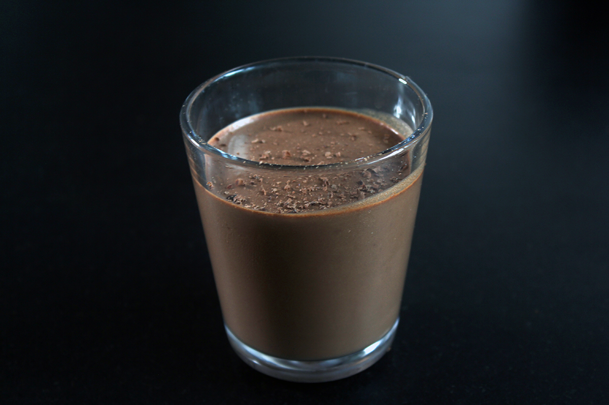

Chocolatemousse
6 servings

Ingrediens
How to
1. Melt the chocolate together with 1.5 dl whipping cream in a pot with even heat.
2. Stir from time to time and keep an eye on the mixture. It only needs to be melted together. Take the pot of the heat and let it cool of.
3. Stir the egg yolks in the chocolate until is has become a smooth consistency.
4. Whip the egg whites until is becomes frothy, and add sugar. Whip the mixture for 2 minuts - to a solid consistency.
5. After that whip the rest of the whipping cream to a light foam.
6. Turn the chocolatemass og the whipped crem together - start by adding ⅓ of the whipped cream and turn the rest of it in the mixture. Repeat with the egg yolks.
7. Serve the chocolatemousse in small servingglasses and let them cool in the fridge at least 3 hours. Decorate with chopped chocolate pieces.